Tree Felling
Controlled removal of unsuitable, unsafe or unwanted trees.
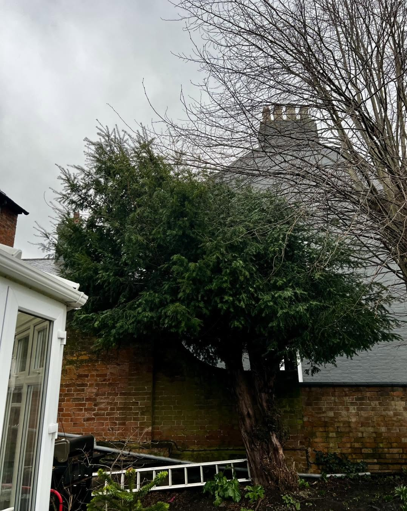
Sunnyside Gardeners is a friendly, professional family-run business providing expert tree surgery, hedge care, gardening and landscaping across Leicestershire and surrounding counties.
We provide competitive quotations and carry out every job in an efficient, productive and timely manner. Our focus is simple: expert advice, high-quality workmanship and a site left clean and tidy when the work is complete.
From careful pruning and crown reductions to complete tree removal, hedge cutting and regular garden maintenance, customers can rely on one experienced local team.
Arrange a free site visit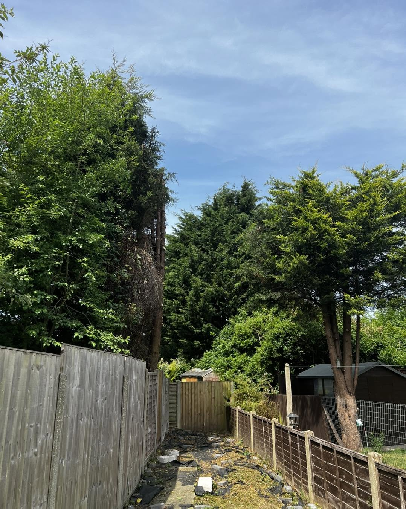
Whether you need a single tree made safe, an overgrown hedge restored or dependable garden maintenance, Sunnyside Gardeners delivers practical solutions with a professional finish.
Controlled removal of unsuitable, unsafe or unwanted trees.
Careful reductions and thinning to manage size, shape and light.
Thoughtful pruning to improve structure, clearance and appearance.
One-off and regular hedge trimming for neat, controlled growth.
Lawn mowing, weeding, planting, borders and seasonal care.
New lawns, fencing, decorative landscaping and garden improvements.
A complete removal project that opened up a previously crowded garden and left the area clear, tidy and ready for its next stage.
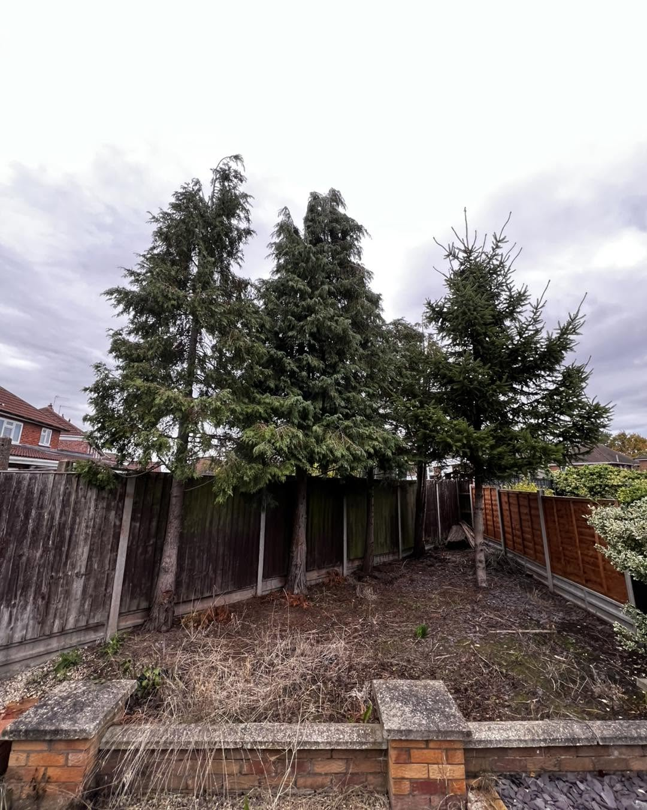
Before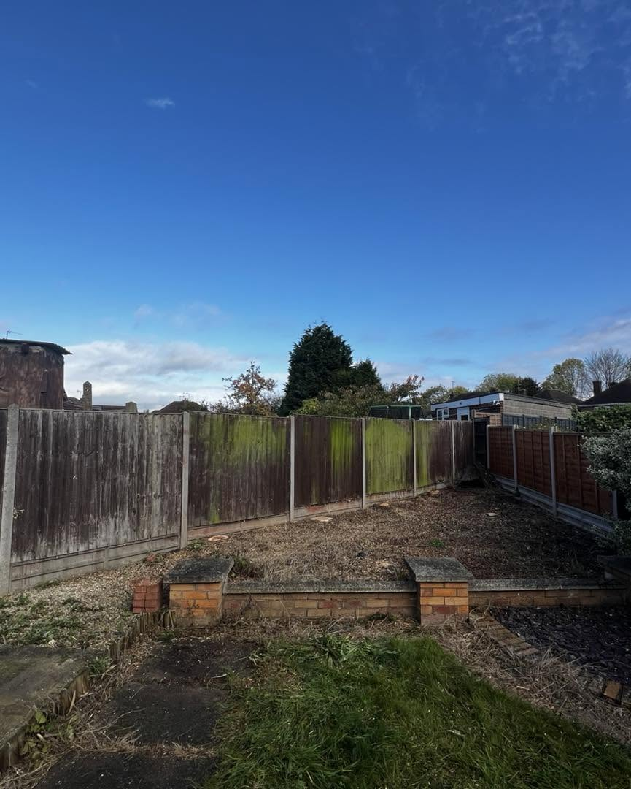
AfterEvery project is planned around the property, access and surrounding features. Work is completed methodically, and arisings are removed so customers are not left with a clean-up job.
Flexible one-off, weekly and fortnightly visits are available for domestic and commercial customers.
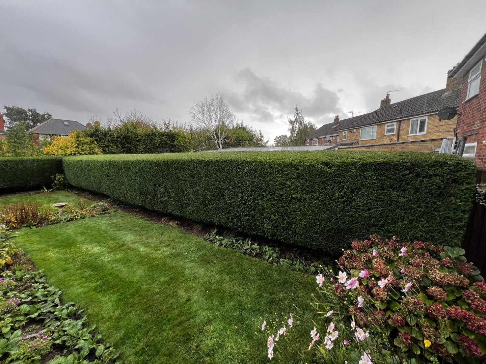
Tree reductions, removals, hedge maintenance and garden care completed by Sunnyside Gardeners.
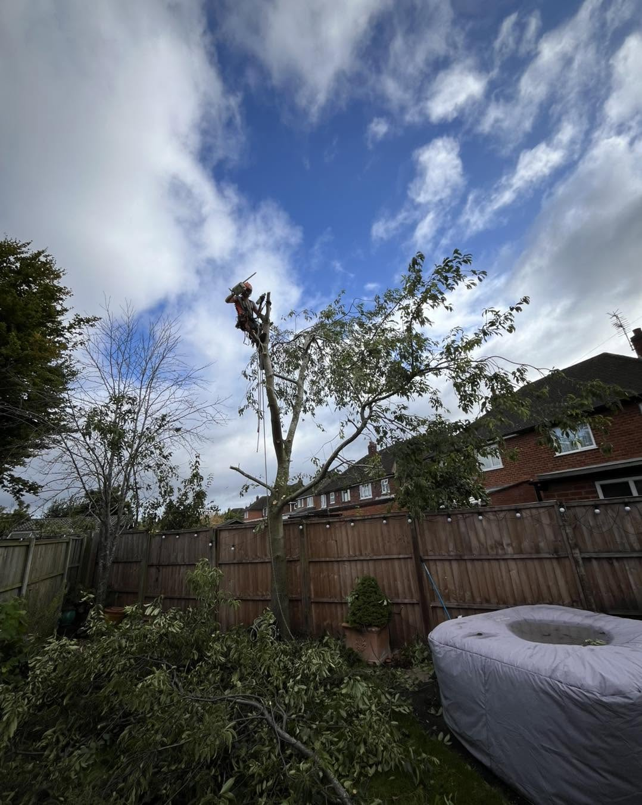
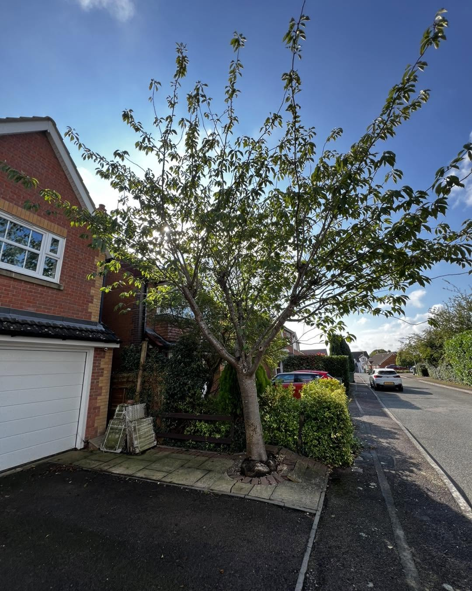
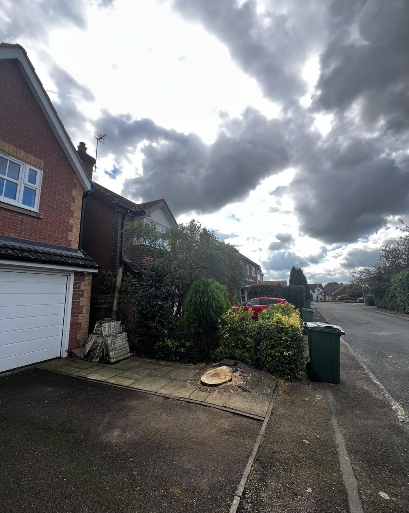
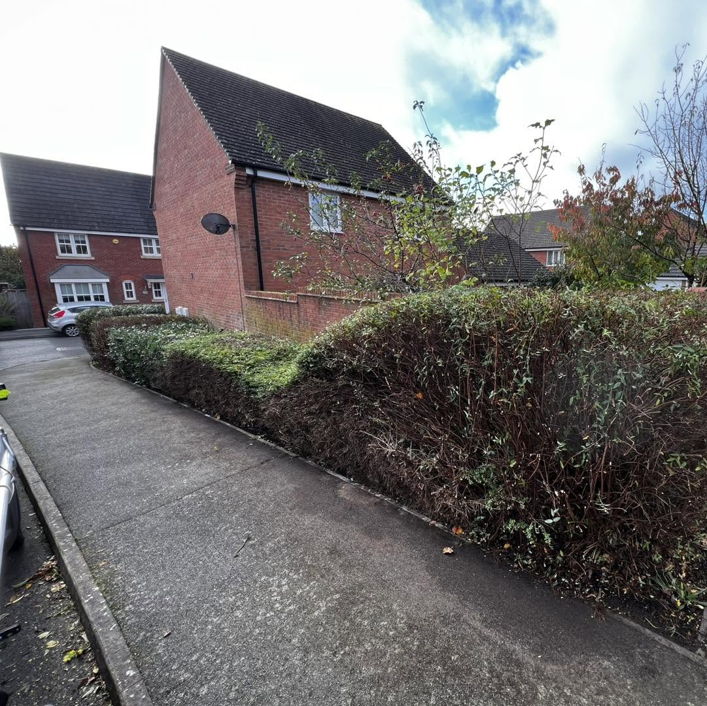
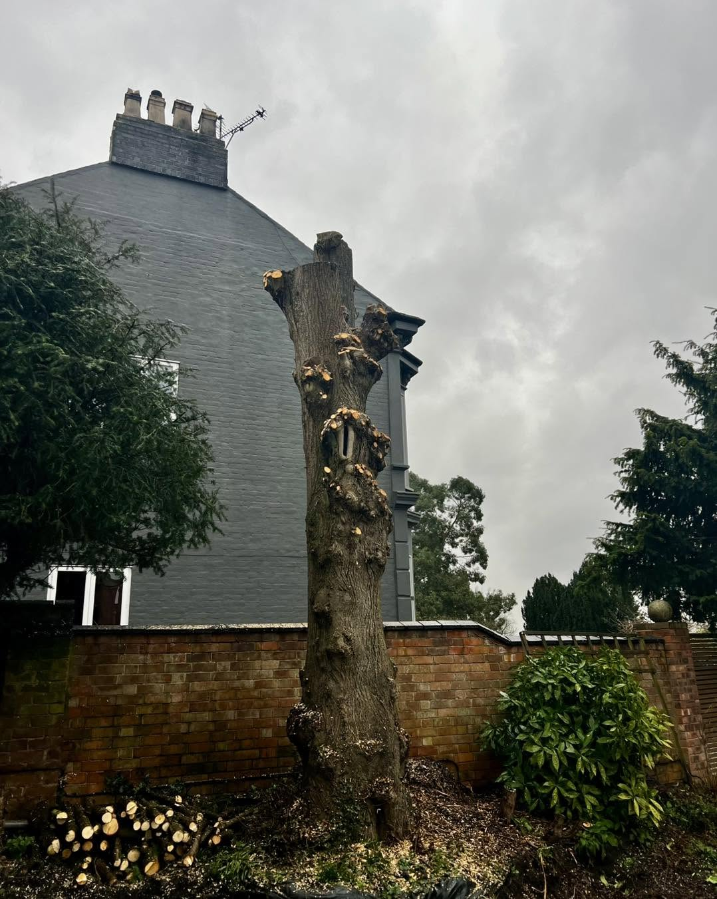
Friendly service, fair pricing, punctual arrivals and tidy results are mentioned time and again by local customers.
“Great guy, punctual and helpful and gave great advice and aftercare tips. Removed a large stone water feature, two big branches, a large section of another tree and turfed a large section of our garden. Highly recommended.”
Mr SwordsLeicester“Great service, very friendly and good prices. Made a great job of removing our tree and opening up our garden. Thanks so much.”
Mrs HopeHinckley“Martin did a quality job and his pricing was very reasonable. He arrived when he said he would, got straight into the two-day task and left no mess for us to tidy afterwards. Very happy.”
Jamie PowellLocal customerTree surgery, gardening and landscaping services are available throughout Leicestershire and neighbouring areas.
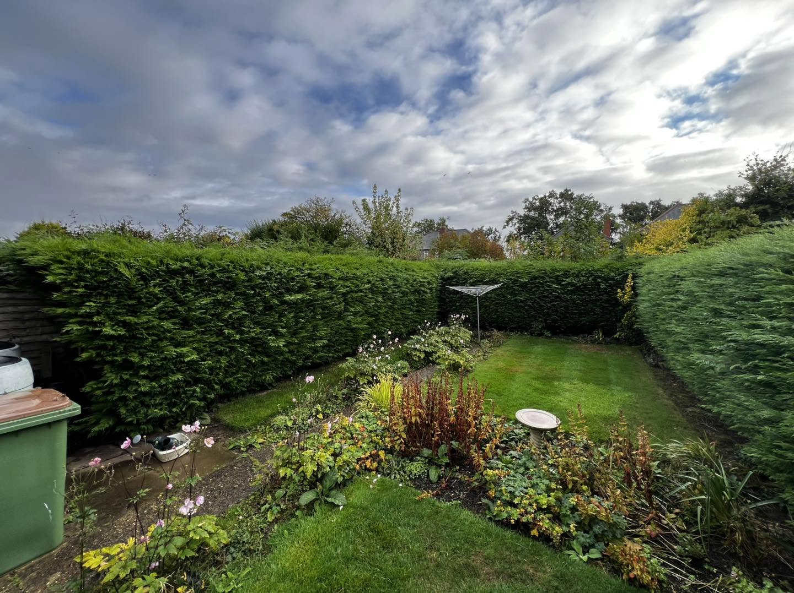
Tell Sunnyside Gardeners what you need help with. Share a few photos and your location for an initial conversation, or arrange a free site visit and no-obligation quotation.